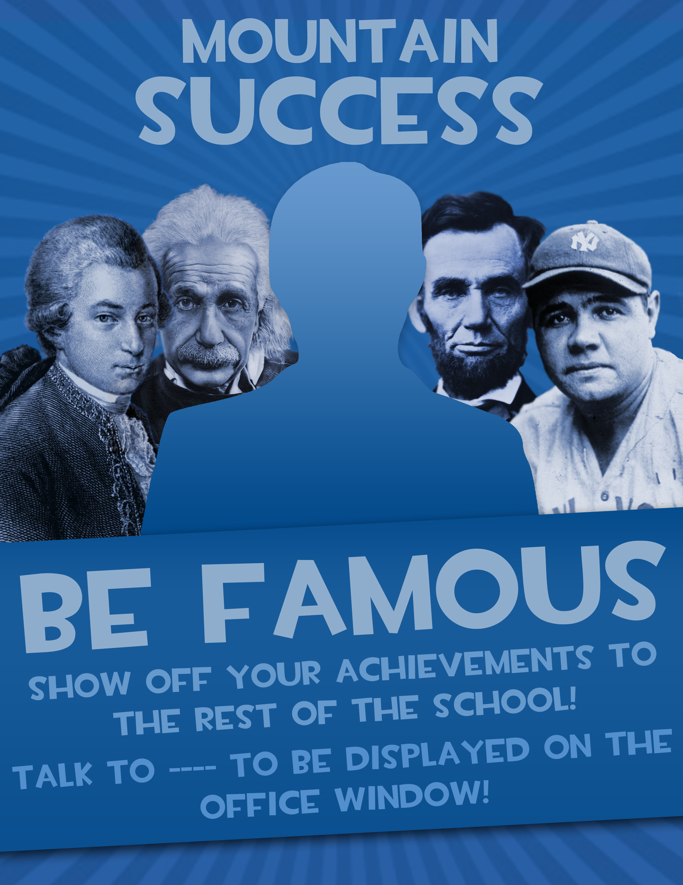
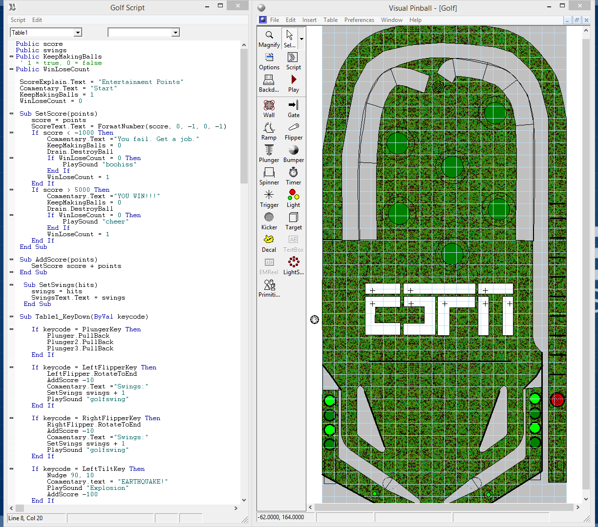
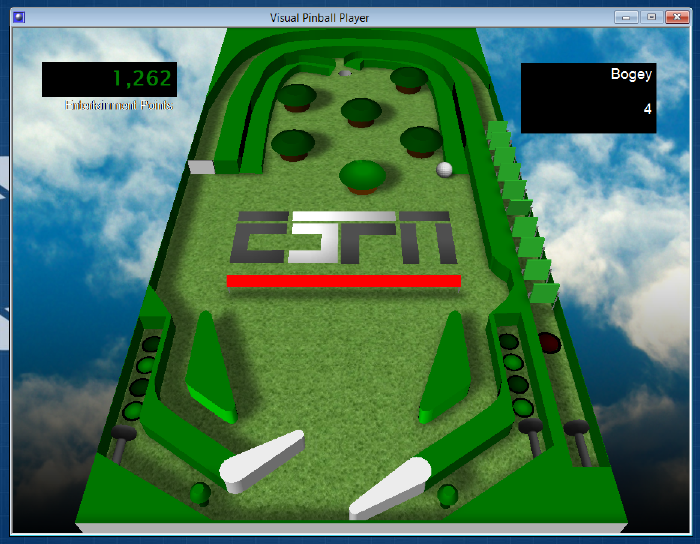
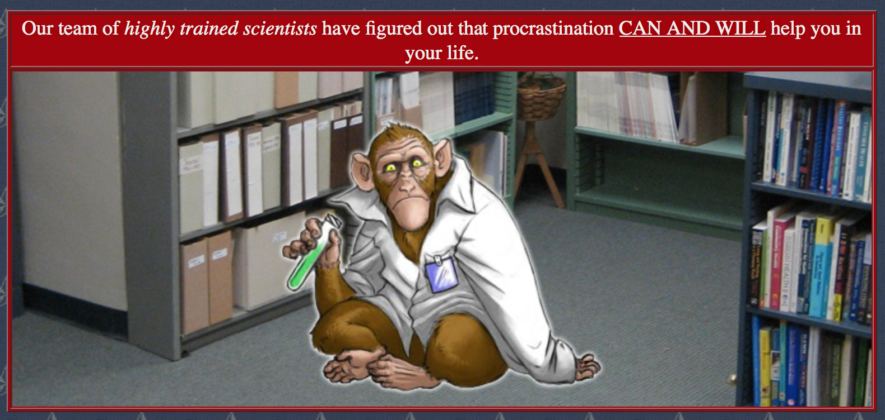
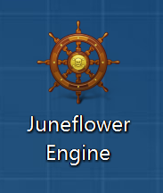
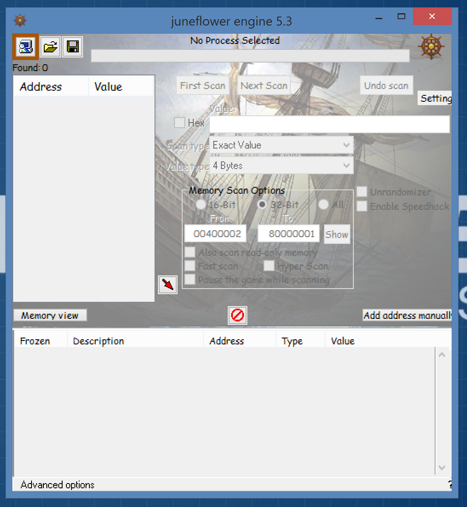
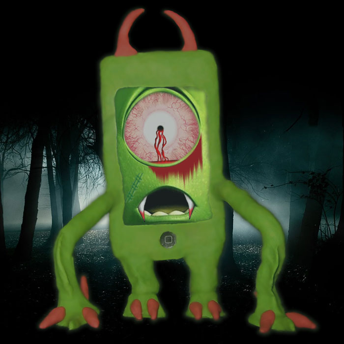
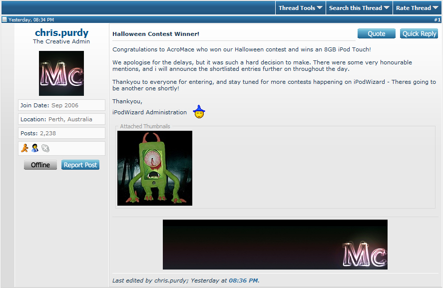
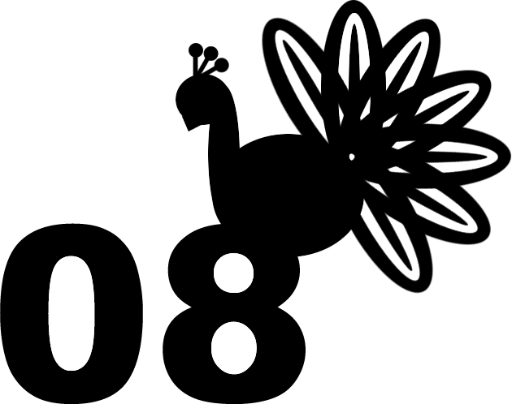

Here are some of the minor projects that didn’t make the cut for the front page.
The poster was created for a school group that used to be called Mountain Success. The group was meant to celebrate students’ achievements in all kinds of different fields, not just academic, so I chose four famous people in four major award-rich categories. From the left, the people are Mozart (music), Einstein (academics), Lincoln (politics), and Ruth (sports).
The name of the teacher on the poster has been edited out for privacy.
In Grade 10, I took an online course from DigiPen called CS1: Video Game Concepts Class. One of the assignments asked us to create mock ups for game interfaces. The following two were created in Photoshop, you can click them to see them in full screen:
MMORPG
FPS
Canada held its federal election in 2011, so the students of Socials 10 were tasked with creating a book-type project with information about the election in it. The final product is almost 100 MB, so I have included some pictures below instead:
If you are interested in reading the rest, click here to download the file. Be warned: you may be subject to a Grade 10 student’s political opinions about the election.
This was another project from Computer Science 9. We used a program called Visual Pinball to create a pinball game. The program allowed a surprising degree of customization due to its VBScript support. Here is what the interface looked like:
I know the script on the left is not commented, but to be fair, I was in Grade 9 and I don’t recall even knowing language I was actually using. I just looked up the documentation to find out how to make the program do stuff.
Here is what the game looked like while in progress:
The ESPN logo lit up, switching letter by letter every second. I believe the “Entertainment Points” was actually on a black background as well, but it doesn’t seem like the game transitioned well from Windows XP to 8.
The points system worked as follows. When there was an earthquake (you shot the ball), the points would decrease by 100. The points would also decrease by time as people lost interest (which makes sense as they were watching golf). Finally, the points also decreased when the ball made its way past the paddles and “Hit the audience.” Your ears would also be violated by a very loud screaming sound.
The way to gain points was to either hit the ball, hit the trees, hit the pads on the side, or to get the ball in the hole. The number you see on the top right is how many swings you have made (as in how many times you used the paddles). After a certain number of holes, when your score reached 5000, a loud siren would ring and you’d be told that you won. Yay!
(If you read the script, you may notice that it tells you to end your suffering pin-ball-golfing career after a soul crushing defeat and get a job if you lose. I apologize to all the aspiring pin-ball-golfers who were discouraged by this comment.)
One of the assignments in Computer Science 9 was creating a website in HTML. I created a website about procrastination. You can click the picture below to be taken to the website.
I had just figured out how to use the Filter/Render option in Photoshop and may have overused it a little in this project. The motivational posters were less out-of-style back then, just as a reference.
Although Halo did not have any security in place to prevent hacking, which eased the creation of HyperHalo, a lot of online games did. However, generally the security measures were poorly implemented, and if I recall correctly, the programs would only search to see if certain strings were found. Since Cheat Engine was detectable by basically all security software that were even remotely functional, people started making Undetected Cheat Engines, or UCEs, where all the variable names and identifiable strings in the source code of Cheat Engine were replaced and recompiled so that it could not be detected. Here is the result:
 The name Juneflower is a reference to Mayflower, and it’s a complex metaphor relating the plight of those seeking refuge from religious persecution and facing the treacherous nature of the unknown with the digital exploitation of intricate simulations of reality in our society’s desire to seek escapism.
Just kidding, I chose it after I heard a podcast from HowStuffWorks about Mayflower and I thought Juneflower sounded funny. Because June comes after May, get it? Hahahaha, haha, ha. Ha.
I never actually got to use the UCE for anything, except Halo, but I didn’t upload it online as then it would become a Detected Cheat Engine. However, after over half a decade, I would guess (and hope) that security companies would have found better ways to detect hacking software than searching for strings by now.
Back before the release of the iPhone and iPod Touch, there was a very active iPod modding community, one of which being the iPod Wizard forums. That niche dwindled with the rise of the jailbreaking community, but there were still quite a few active members of the site. I was mostly a lurker, but when they posted a contest on Halloween, I decided to participate:
That is a picture of my iPod Touch wrapped in plastic wrap and squished inside a clay monster I made. The picture shown on the iPod is a slightly modified image of Mike from Monsters Inc. Here is a picture of me winning the contest:
Unfortunately, the owner was nowhere to be found and the community collapsed. You can click here to go see the post yourself. Although I didn’t really get anything out of it, I did have a lot of fun in the process.
The graduating class of 2008 in elementary school were asked to submit logo ideas for our graduation sweaters. This was the first time I created something from Photoshop instead of editing already existing materials:
From the feedback, I heard it was a little too feminine. I proceeded to make a version with everything on fire, which I heard was too masculine. I guess you can’t please everyone when it comes to peacock logos.